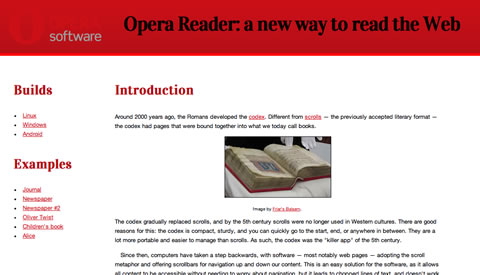
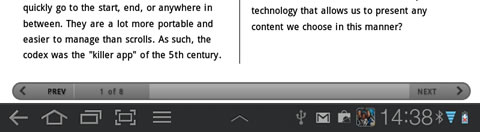

Opera Reader: a new way to read the Web!
Introduction
Around 2000 years ago, the Romans developed the codex. Different from scrolls — the previously accepted literary format — the codex had pages that were bound together into what we today call books.

Figure 1: A codex. Image by Friar's Balsam.
The codex gradually replaced scrolls, and by the 5th century scrolls were no longer used in Western cultures. There are good reasons for this: the codex is compact, sturdy, and you can quickly go to the start, end, or anywhere in between. They are a lot more portable and easier to manage than scrolls. As such, the codex was the "killer app" of the 5th century.
Since then, computers have taken a step backwards, with software — most notably web pages — adopting the scroll metaphor and offering scrollbars for navigation up and down our content. This is an easy solution for the software, as it allows all content to be accessible without needing to worry about pagination, but it leads to chopped lines of text, and doesn't work so well on mice-less devices. And, mankind misses the beauty of a nicely laid out page.
We've more recently seen a step in the right direction, with a proliferation of e-reader devices (such as the Amazon Kindle) with "next page" and "previous page" buttons allowing users to read e-books in a more "book like" fashion. But the Kindle is a walled garden: wouldn't it be beneficial to have an open technology that allows us to present any content we choose in this manner?
To this end, we'd like to present native pages — a proof of concept (codenamed Opera Reader) that builds on top of CSS to allow us to split content into pages that can be "turned" in a natural manner through gestures rather than point and click, control the positioning/floating of figures in multi-column layouts more precisely and provide a consistent navigation system for such content that is independent of your documents. The new CSS features that enable this are detailed in the CSS Generated Content for Paged Media module. In this article, we'll show you how you can make standard web content Opera-Reader compatible with just a few lines of CSS.
In short, Opera Reader is the codex for the Web. We think it has the power to dramatically improve the way in which web content is consumed, by presenting it in a much more compelling fashion. Read on, and let us know what you think.
Getting started
Opera Reader currently exists inside special versions of the Opera Browser. First up, get an Opera reader build from Opera Labs. The difference between these builds and the normal Opera browser is that they support the CSS described above — the resulting paginated web content provides a much more compelling reading experience, especially on touch screens such as tablets.
After downloading Opera Reader, you need to change two settings to make it work as described in this document. First of all, type opera:config in the URL bar. Next, search for scroll in the "Quick find" field. Check the "Scroll is Pan" and "Smooth Scrolling" checkboxes. You do not need to restart Opera after doing so.
Next, you'll need some examples to view in Opera Reader, so you can see how it works. We'd first like to direct you to the Opera Reader tutorial example — this is pretty much the same article that you are currently reading, except presented in a different set of styles, with technologies such as Media queries and Viewport used to make the design adaptive, and Opera Reader CSS added into the mix. Try it in an Opera Reader build, and in other different browsers, to see how the experience differs!

Figure 2: Our example Opera Reader tutorial site
You'll be able to control the page browsing via swiping the page in different directions on touch screen devices, using the cursor keys on a device with a keyboard, and by activating the on-screen control buttons in any way you choose to do so. You should also check out Håkon Wium Lie's Simple Opera Reader example, which includes links to a whole load more demos.
Note: this technology is at an early stage, so you may well come across bugs. Please report them to us as you find them!
The basic premise of Opera Reader
Opera Reader works via some specific CSS constructs that turn your usual endlessly scrolling single page of content into multiple pages that can be navigated between. They are currently implemented using the -o- vendor prefix, so browsers that don't support the technology will just ignore them completely — no harm done. For example, you can specify a block of rules that will only be applied to Opera Reader builds using a media query containing a special -o-paged media type:
@media -o-paged {
/* specific Opera Reader rules */
}With that covered, let's now start walking through the special Opera Reader parts of the code contained inside our Opera Reader tutorial example.
Splitting content into pages
To split content into pages, we need to specify a fixed height for our document, and direction for the pagination to flow in:
@media -o-paged {
html {
height: 100%;
overflow: -o-paged-x;
}
}Here we specify that the height of the <html> element should be constrained to 100%, which is the height of the window, and that the overflow should go into extra pages along the x axis (i.e., horizontally). This is all that is needed to break the document up into paged media!
The most common reason for the pagination not working is if you forget to constrain the height. The height can be constrained by setting the height property, as above, or by setting position: absolute; on the element in question.
The four custom values that Opera Reader provides for overflow are:
-o-paged-x-o-paged-y-o-paged-x-controls-o-paged-y-controls
These are fairly self-explanatory — x and y indicate the direction you need to move in to get to the overflow pages, and including the controls keyword makes Opera Reader display default controls that can be used to control your movement through the pages without a touch screen, plus a page counter. You can customise the Opera Reader controls by designing your own buttons and wiring them up using the simple Opera Reader API, discussed later on.
Styling our pages
One you've set the content up to paginate, as discussed above, there isn't really much more to it, beyond what you already know from your experience of styling web pages normally. Ok, there are a few more things, but these are easy to understand — let's explore our main example in more detail.
Adding padding to our pages
Books typically have some space between the text and the edges of the page. We can add some space in any way that would make sense, for example, we've done this to make the content sit nicely in portrait mode:
@media -o-paged {
html {
overflow: -o-paged-x;
height: 94%;
padding-top: 3%;
}
}Then we've made the content a bit shorter in the narrower layout so that it still fits ok:
@media -o-paged and (min-width:800px) {
html {
height: 88%;
}
}Persisting elements across pages
We have already looked at how to split our content into pages, however in some cases you may want part of the page to persist across all pages — a header or sidebar perhaps. To do this, we set the overflow: -o-paged-x; property just on the part of the content we want to be paged, for example:
article#content {
position: absolute;
top: 12em;
bottom: 0;
left: 0;
right: 0;
overflow: -o-paged-x-controls;
}In our example's case, this didn't work very well — the header and the sidebar are quite big, which means that there isn't much space for the paginated part. In our case it was better to just let the whole area paginate and not persist anything across pages.
By this token, you can paginate pretty much any part of the document you want, leaving the rest to persist.
Multi-column layout
Part of the reason why browsers cling to scrollbars is that the alternative — pagination — is hard. There is no optimal formula that guarantees good-looking pages. However, authors can at least do a few things to help.
The CSS3 Multi-column Layout Module really comes into its own with Opera Reader content. When viewed in an Opera Reader build, the main content of the article is displayed in multiple columns at an optimal width, rather than a set number of columns. The main content column shrinks and grows with the screen width, therefore, depending on the width of the browser, the text will display in any number of columns between 1 and 3. We've put a maximum width of 1300px on the <body>, so that the layout doesn't start to look too stretched on really wide monitors. The column ruleset looks like so (multiple vendor prefixes removed for brevity):
@media -o-paged {
...
.cols {
columns: 25em;
column-gap: 3em;
column-rule: thin solid black;
column-fill: balance;
}
}We've also set a column gap of 3ems, put a rule between each column, and chosen column-fill: balance; to make the columns lengths equal where possible. Things tend to look neater this way.
We can also ensure that page breaks occur in the right place by indicating where page breaks are permissible and where they aren't, using break-before, break-after and break-inside. For example, we can easily express that page breaks should be avoided right after a heading, which makes sense:
article h2, article h3 {
break-after: avoid;
}Pagination hints
The widows and orphan properties set the minimum number of lines that must be left at the top/bottom of a page. By setting them to a low number, pagination becomes easier. For example:
html { widows: 1; orphans: 1 }Figures: floats and column spans
It's easy to add images and figures to a document. For example, our figures are marked up like this:
<figure class="two-col">
<p><img src="images/codex.jpg"
alt="a codex"></p>
<figcaption>caption here</figcaption>
</figure>However, traditionally floats haven't given us much control over where the images sit in the text, and CSS3 multi-col only allows us to span across one column, or all of them. To improve this, we've added some custom values for float and column-span:
figure.two-col {
width: auto;
margin: 0;
column-span: -o-integer(2);
float: -o-top-next-page;
}
figure.two-col img {
width: 100%;
}-o-integer allows us to specify an maximum number of columns for the image to span across, in this case two. If column-span is set to 3 and there are only 2 columns, spanning will occur across both columns.
The float property supports the following new values:
-o-top/-o-bottom: float to the top/bottom of the natural column.-o-top-corner/-o-bottom-corner: float to the top/bottom corner of last column.-o-top-next-page/-o-bottom-next-page: float to the top/bottom of the first column of the next page.-o-top-corner-next-page/-o-bottom-corner-next-page: float to the top/bottom of the last column of the next page.
Note: Full-page ads/images can be achieved by floating an element to the top/bottom, making it span across all columns, and setting the height/width to 100%.
Moving figures into the padding area
Sometimes, in newspaper or magazine layouts, images bleed into the edges of pages. This is achieved in our example with negative margins — for example we've set padding on the text like this:
html {
overflow: -o-paged-x;
height: 100%;
box-sizing: border-box;
padding: 5%;
}Then moved some of our images into the padding area with negative margins:
img.bleed {
margin: -6% -6% auto -6%;
width: 112%;
}Specifying other navigation options
In the paged mode used by Opera Reader, we can specify navigation to other documents appearing to the top, right, bottom and left of the current document. To indicate which documents are reached by navigating in different directions, a new at-rule has been added, which can contain four custom properties. Some of these properties work in conjunction with <link> elements in the <head>, with specific rel values.
for a start, let's consider the following <link> elements:
<link rel="home" href="http://dev.opera.com">
<link rel="previous"
href="http://people.opera.com/cmills/orarticle/">The new at-rule — @-o-navigation — can look something like this:
@-o-navigation {
nav-up: -o-url-doc(/);
nav-down: url(a1.html);
nav-right: -o-link-rel(next);
nav-left: -o-go(back);
}The four new properties are pretty self explanatory — nav-up is what you want to navigate to when the page is moved up, and so on. Let's now talk through the four different values that the properties can take:
-o-url-doc(path): The path specified is a relative path to the HTML document, for example/to go to the root document.url(path): The path specified is a standard URL to a file, and can be of any type thaturl()normally accepts (for example inbackground-image: url();).-o-link-rel(value): The value is arelattribute value from a<link>element. For example, when you specifynext, the browser looks for a<link>element in the<head>, and then takes itshrefvalue as the document to navigate to.-o-go(value): in this case, the value can beforwardorback— these instruct the browser to go forward or back in its history.
Scripted paging
As described earlier, Opera Reader provides a basic set of controls for navigating the pages when you specify the controls keyword, e.g. -o-paged-x-controls. If you don't specify the default controls, you can create your own navigation controls and wire them up using the Opera Reader API. Let's look at how to do this in more detail.
To this end, we have created a custom navigation menu that is hidden by default (using display: none;), and only displayed when in paged media mode. It looks like so:

Figure 3: Our custom page navigation menu.
The HTML basis for this is three simple links:
<a href="#" id="prev" onclick="prevpage()">
Previous</a>
<div id="count"></div>
<a href="#" id="next" onclick="nextpage()">
Next</a>So how do we wire this up? The JavaScript looks like so:
function update() {
var x = document.getElementById('count');
var paged = document.getElementById('main');
x.innerHTML = paged.currentPage+1 + " of "
+ paged.pageCount;
paged.onpagechange = updateEvent;
}
function nextpage() {
var paged = document.getElementById('main');
paged.currentPage ++;
update();
}
function prevpage() {
var paged = document.getElementById('main');
paged.currentPage --;
update();
}
function updateEvent(e) {
var x = document.getElementById('count');
x.innerHTML = e.currentPage+1 + " of "
+ e.pageCount;
}As you can see this is pretty simple: the API exposes simple properties of the paged content — the element assigned overflow: -o-paged-* — which in the case of our Opera Reader tutorial is the <html> element: it has an ID of main. This allows us to move forwards (paged.currentPage ++) and backwards (paged.currentPage --), and access current page and total page count information (currentPage and pageCount). A simple event — onpagechange is combined with a custom function to update the information each time the page is changed.
Summary
and so ends our introduction to Opera Reader, and paged web media. Please let us know what you think, and share your examples with us: we are still working on perfecting the features of this exciting new technology, and exploring the limits of what is achievable!
/code/code/codeChris Mills

Chris Mills is a web technologist, open standards evangelist and education agitator, currently working at Opera Software in the developer relations team. He spends most of his time writing articles about web standards for dev.opera.com and other publications (such as .net mag and A List Apart), giving talks at universities and industry conferences, and lobbying universities to improve their web education courses. He believes that education is the answer to everything, but in particular he is passionate about using education to improve the overall content quality, accessibility, usability and future-viability of the Web.
He is the creator of the Opera Web standards curriculum, contributor to the WaSP InterACT project, and coauthor of InterACT with web standards: A Holistic Approach to Web Design. In August 2011, he also accepted the position of co-chair of the newly-formed Web Education Community Group.
Outside work he is a heavy metal drummer, proud father of three and lover of good beer.
This article is licensed under a Creative Commons Attribution 3.0 Unported license.
Comments
The forum archive of this article is still available on My Opera.
-

Thank you for this great work.
-

The comparison of a web page to a scroll is not quite correct:
-

Things that I don't like in this build:
-
Sorry, but I like "scrolls" on the Web. Paginated Web would be step backwards for me -- less accessible and less usable.
-

i really like it. pages are the future, because of easier media handling. scrolling is an inaccurate and time-expensive way to focus the content.
No new comments accepted.J M
Tuesday, December 20, 2011
HOWEVER: There seem to be a possible bug somewhere! (well, it is pre-alpha): On the page with examples http://people.opera.com/howcome/2011/reader/ several links in the article does not work in opera reader (opera 12 labs). I suspect the problem is in the html or the css since other pages like http://people.opera.com/cmills/orarticle/ works just fine.
I would like some help/info since I am converting a book for the opera reader.
John Mortensen
QuHno
Friday, January 13, 2012
I can jump through the web page and If I want to reach a certain place, I can do so almost instantaneously. That wasn't possible with an older scroll and isn't possible with a codex too unless there is no index or ribbon that shows where the interesting content is. Sturdy and portable are just a properties of physical books, not e-books or web pages.
btw: A scroll in it's transport pipe is extremely sturdy as you can see in some 6000 year old scrolls, whereas a codex needs constant attention because flipping the pages can cause stress to binding and parchment or paper ;)
I wonder what the effects for userscripts|extensions will be, i.e. a top-words-higlighter. Will they flip the pages by default too or just work on the first page and then fail to display further content?
If pages are CSSed like this, the whole content has to be downloaded at once, this seems to be a disadvantage to server sided pagination, the solution could be a 2 step approach: 1st page excerpt or the first page or chapter (may be just limiting the downloaded content and let the error correction of the HTML5 parser do the rest :D ), 2nd page the full content. An auto indexing system would be fine too, but something similar to the "outline" userCSS would suffice for that.
jpalecek
Sunday, March 4, 2012
1. It is impossible to select text in paged content (drag moves it).
2. The layout could be better. Eg. in the Wikipedia example, I got the title (History) on the bottom of a page, its content beginning on the following. That is a no-no in real typography.
QuHno: If pages are CSSed like this, the whole content has to be downloaded at once, this seems to be a disadvantage to server sided pagination ...
Not really. Actually, downloading the whole content at once is much faster in most circumstances today. Few articles have above 10 kB (text), and that is already several pages of text (and is downloaded in well under a second). The only advantage of server-sided pagination is that the ads (which are also the major source of sluggishness) are displayed more than once.
Moreover, single-page content is much nicer for reading and tools (like search).
> I wonder what the effects for userscripts|extensions will be, i.e. a top-words-higlighter. Will they flip the pages by default
Why don't you try it? I don't know what top-words-highlighter does (I searched, but couldn't find any info on what it does, only download) but if it actually highlights something, it should work just normally. If it calls .scrollTo and such, it might need to be changed.
FataL
Wednesday, May 16, 2012
But advertizers and publishers would love this tech -- it makes readers to follow designated flow (through advertizements and other unrelated suff).
Marius
Tuesday, September 4, 2012